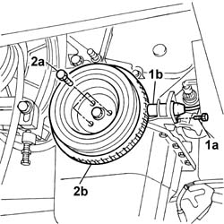

1092A12 crankshaft pulley - r+r for versions with air conditioner
- Path
- Procedures > 10 ENGINE > 1092 ENGINE COMPONENT MISCELLANEOUS DRIVES > 1092A crankshaft pulley and idle pulleys > 1092A12 crankshaft pulley - r+r for versions with air conditioner
- Kind
- repair procedure (removal / refitting; the operation number is the code)
- Applies to
- all engines; all production periods
- Interactive page
- https://sloeber94.github.io/elrnDB-fDbl/en/#/2584321
Applies to: all engines; all production periods
 Removing
Removing
 Refitting
RefittingPlace the car on a ramp.
7055B54 under-engine guard - r r
1092B68 belt from a/c compressor to alternator drive r + r
1048A10 air cleaner filtering element - replace
1092C11 power steering pump drive belt - r r for versions with air conditioner
1092D10 air conditioner compressor drive belt - r + r
1. Undo the fixing bolt (1a) and remove the rpm sensor (1b) from the housing.
2. Undo the fixing bolts (2a) and remove the crankshaft pulley (2b).

Applies to: all engines; all production periods
Refitting
RemovingFit pulley and tighten retaining bolts to torque.
 | Fastening | Component | Ø | Value (daNm) |
|---|---|---|---|---|
- | Bolt | CRANKSHAFT PULLEY | M8 x 1.25 | 2.2 |
Tighten the bolt fixing the rpm sensor.
Using a feeler gauge, check that the gap between the flywheel and the sensor is within the recommended limits.
 | Measurement | Value | |
|---|---|---|---|
- | Gap (mm) | 0.5 - 1.5 |
1092D10 air conditioner compressor drive belt - r + r
1092C11 power steering pump drive belt - r r for versions with air conditioner
1048A10 air cleaner filtering element - replace
1092B68 belt from a/c compressor to alternator drive r + r
7055B54 under-engine guard - r r
Remove the vehicle from the ramp.
Topics linked from this page (6)
- 1048A10 air cleaner filtering element - replace
- 1092B68 belt from a/c compressor to alternator drive r + r
- 1092C11 power steering pump drive belt - r r for versions with air conditioner
- 1092D10 air conditioner compressor drive belt - r + r
- 4450B04 right front wheel r r
- 7055B54 under-engine guard - r r
Topics that link to this page (9)
- 1016C11 single cylinder head-r r gasket for versions with air conditioner
- 1020D16 front crankshaft oil seal cover - r+r and replace gaskets for versions with airconditioner
- 1020D20 front crankshaft cover oil seal - replace for versions with air conditioner
- 1028H21 piston with connecting rod - r r
- 1032B14 TOOTHED TIMING BELT - R + R FOR TIMING ADJUSTMENT OR REPLACEMENT VERSIONS WITH AIR CONDITIONING
- 1032B47 toothed drive pulley - r r for versions with air conditioner
- 1032B53 driven toothed pulley (one) - r r for versions with air conditioner
- 1032C19 mobile timing belt tensioner - r r for versions with air conditioner
- 1088C12 water pump - r+r for versions with air conditioner